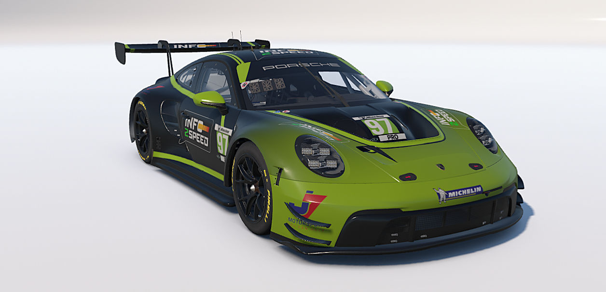
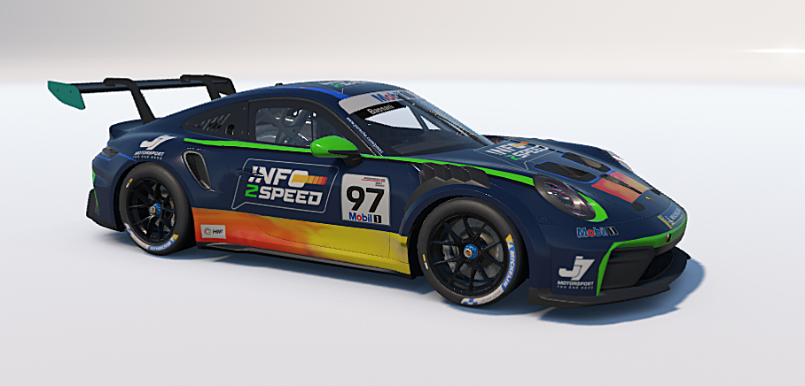

01 / GT3ENDURANCE & SPRINT
PORSCHE 911 GT3 R
O GT3 R da Info2Speed. Confira as seis vistas, os dados do carro e a participação na F1BC GT3 Sprint.
CONHECER O CARRO
Três máquinas, diferentes desafios e a mesma identidade. Escolha um carro para conhecer a pintura, os pilotos, os campeonatos e a ficha técnica.

01 / GT3O GT3 R da Info2Speed. Confira as seis vistas, os dados do carro e a participação na F1BC GT3 Sprint.
CONHECER O CARRO
02 / CUPPintura azul-marinho, verde e degradê. Sete ângulos do carro, ficha da geração 992.2 e resultados da F1BC.
CONHECER O CARRO 03 / FÓRMULA
03 / FÓRMULAConheça o F4 de Daniel Ferreira #49, a campanha campeã e as 12 corridas da temporada encerrada.
CONHECER O CARRO